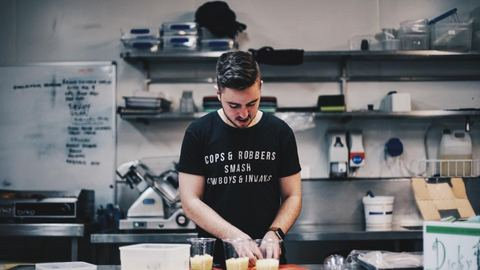
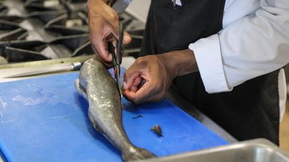
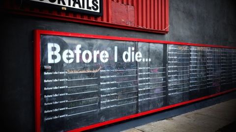

役立つ情報を毎日お届けするブログです。
 MAF GROUP の自社サービス未経験から「自分のお酒ブランド」を持てる副業｜オリジナルシャンパン開業という選択肢未経験・副業・地方からでも始められる、オリジナルシャンパンの開業パッケージ開業パッケージをくわしく見る
MAF GROUP の自社サービス未経験から「自分のお酒ブランド」を持てる副業｜オリジナルシャンパン開業という選択肢未経験・副業・地方からでも始められる、オリジナルシャンパンの開業パッケージ開業パッケージをくわしく見る新着記事

料理・掃除機がけ・皿洗いを自動化する方法｜毎日の家事を道具に任せる始め方夕方に帰ってきてからの料理、床に目立ってくるほこり、食後のシンクにたまるお皿。どれも毎日のことなので、終わったと思ったらまた次の日がやってきます。 ここで言う「自動化」は、毎日同じ…- ポケカの保管方法と湿気対策｜反り・カビから守る家での置き方と整理のしかたポケモンカードを集めていると、いつのまにかカードが少し反っていたり、ケースの中がくもっていたりすることがあります。 特に梅雨や夏、冬の結露の時期は、家の中でも湿気がこもりやすく、大…
- 投資詐欺の手口と見分け方｜SNS広告やLINEの誘いでお金を払う前の確認スマートフォンでSNSを見ていると、有名人の写真とともに「投資で資産が増えた」「無料で投資を教えます」といった広告が目に入ることがあります。 仕事や家事の合間に見て、「少しだけなら…
 帳簿付け・請求書・献立の手間を自動化する方法｜毎月と毎日の作業を仕組みに任せる毎月の帳簿付け、月末の請求書、毎日の「今日のごはん、何にしよう」。どれも一回ごとの作業は小さくても、くり返すうちに時間と気力を少しずつ使っていきます。 「自動化」と聞くと難しそうに…
帳簿付け・請求書・献立の手間を自動化する方法｜毎月と毎日の作業を仕組みに任せる毎月の帳簿付け、月末の請求書、毎日の「今日のごはん、何にしよう」。どれも一回ごとの作業は小さくても、くり返すうちに時間と気力を少しずつ使っていきます。 「自動化」と聞くと難しそうに…
ChatGPTで献立を作る指示の出し方｜1週間分と買い物リストをまとめて作る手順「今日のごはん、何にしよう」。毎日のように考えることなのに、仕事や家事の合間に考えるのは意外と疲れるものです。家族の好き嫌いや、冷蔵庫に残っている食材、週末の予定まで考えると、献立…- 音楽配信サービスの選び方｜家事や通勤の「ながら聴き」で比べる4つの点洗い物や洗濯物をたたむ時間、通勤の電車の中。そんな「ながら」の時間に好きな音楽があると、同じ家事や移動でも少し気持ちが軽くなります。ただ、音楽配信サービスはいくつもあり、どれを選べ…
- 30代の仕事服はファッションレンタルで整える｜通勤服選びを軽くする比べ方朝の支度の時間に、「今日は何を着ていこう」と迷ってしまう。買ったはずの服が、職場の雰囲気に合わなくて結局着なくなる。30代になると、仕事の立場や身につけたい印象が少しずつ変わり、仕…
- 主婦が在宅で学べる資格の選び方｜家事の合間でも続く講座の比べ方家事や育児の合間に、何か資格の勉強を始めたい。そう思っても、資格の種類は多く、どれが自分に合うのか分からずに迷ってしまう方は多いのではないでしょうか。まとまった時間が取りにくいと、…

副業で自分のブランドを持つには｜名前・売る相手・始め方の決め方「会社の名前ではなく、自分の名前やお店の名前で何かを届けてみたい」。副業を考えるとき、そんな気持ちを持つ方は少なくありません。ただ、いざ始めようとすると、ブランド名、商品、売る相手…- 平日15分で献立が決まる時短料理の段取り｜主菜・副菜・汁物の組み立て方仕事や家のことを終えて台所に立つと、「今日は何を作ろう」と考えるところから一日の疲れが重くのしかかってきます。料理そのものより、献立を決めることや段取りを組むことに時間がかかってい…
- 家族で使う動画配信サービスの選び方｜同時視聴・子ども向け設定で比べる家で過ごす時間が長くなると、テレビやタブレットで動画を見る機会が家族それぞれに増えていきます。「子どもはアニメ、大人はドラマやスポーツ」と見たいものがばらばらで、どのサービスを選べ…
- 共働き家庭のミールキットおすすめの選び方｜平日の夕食づくりを軽くする比較ポイント共働きの家庭では、仕事を終えて帰宅してから夕食を用意するまでの時間がとても限られています。献立を考え、買い物をして、下ごしらえから始めると、それだけで夜の時間の多くが過ぎてしまいま…
- ブランド品の宅配買取を比較｜店頭に行けない人が安心して手放すための選び方クローゼットの奥に、しばらく使っていないブランドのバッグや財布がしまってある、という方は少なくありません。手放したい気持ちはあっても、平日は仕事で買取店の営業時間に間に合わず、休日…
- 羽毛布団クリーニングの料金の見方｜追加料金で迷わないための確認ポイント羽毛布団をクリーニングに出そうと調べてみると、「1枚いくら」「何枚パック」「送料込み」「保管付き」など、料金の表し方がサービスごとに違っていて、結局いくらかかるのか分かりにくいと感…
- 本の宅配買取おすすめの選び方｜本棚を整理したい人が比べたい4つの点気づけば本棚に入りきらなくなって、床に積んだ本が少しずつ増えている。そんな状態が続くと、部屋が狭く感じるだけでなく、どこかで「片づけなければ」という気持ちがずっと残ってしまいます。…
- 家事代行を初めて頼むときの頼み方｜当日までの準備と伝え方のコツ家事代行が気になっていても、「家の中を他人に見られるのが恥ずかしい」「何をどこまでお願いしてよいのか分からない」と感じて、申し込みの手前で止まってしまう方は少なくありません。 初め…
- 宅配クリーニングおすすめ比較｜保管付き・初めてでも失敗しない選び方クリーニング店まで衣類を運ぶのは、意外と手間がかかるものです。特に冬物のコートやダウンは、かさばって重く、何着もまとめて持っていくのは大変。そんなときに便利なのが、宅配クリーニング…
- 一人暮らしにおすすめの宅配弁当の選び方｜冷凍庫・量・続けやすさで比較仕事から帰ってきて、そこから買い物をして料理をするのは、思っている以上に気力がいるものです。一人分だと食材を使い切れず、結局コンビニや外食が続いてしまう、という声もよく聞きます。 …
- 家事代行サービスおすすめ比較｜料金相場と初めての選び方をわかりやすく「仕事も子育ても忙しくて、家事まで手が回らない」。そう感じている人は少なくありません。そんなときに頼れるのが、家事代行サービスです。掃除や料理、片付けなどを、プロのスタッフが代わり…
- 布団の宅配クリーニングおすすめ比較｜料金・保管・仕上がりで選ぶ失敗しない選び方「布団を洗いたいけれど、大きすぎて家の洗濯機では無理」「クリーニング店まで運ぶのが大変」——そんな悩みを解決してくれるのが、布団の宅配クリーニングです。玄関で集荷してもらい、きれい…